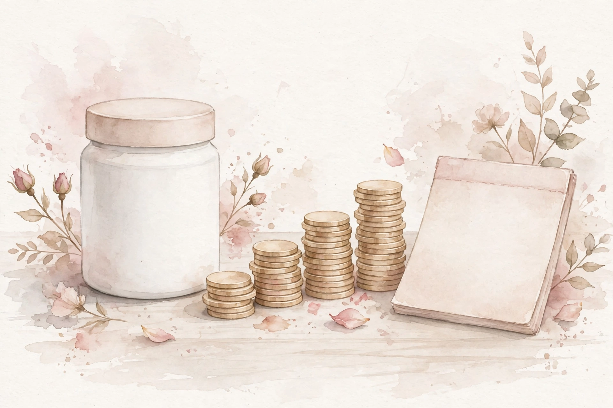

トップ ＞ インナーケア・サプリ ＞ 1日あたりコストの計算の仕方
1日あたりコストの計算の仕方

サプリメントの価格は、「1袋◯円」と表示されるのが普通です。ただ、袋ごとに日数が違うため、そのままでは比べにくくありませんか。この記事では、価格を「1日あたり」に直す計算の仕方を整理します。
計算式は「価格÷日数」、日数は目安量から出す
まず、その商品が何日分かを確認します。内容量（粒数）を、1日の目安量（粒数）で割ると日数が出ます。たとえば、90粒入りで1日3粒が目安なら、90÷3で30日分です。次に、価格を日数で割ると、1日あたりの金額になります。3,000円の商品なら、3,000÷30で1日100円、という計算です。
1日あたりに直すと、内容量の違う商品同士でも、同じものさしで比べられます。月に直したい場合は、1日あたりに30を掛けます。
定期価格と単品価格は、分けて計算する
定期購入には初回価格と2回目以降の価格があるため、計算も分けて行います。初回は「お試しの単価」、2回目以降は「続けた場合の単価」です。長く続ける前提なら、判断の中心は2回目以降の単価になります。単品購入と定期購入を比べる場合も、それぞれ1日あたりに直してから比べると、差が見えやすくなります。
送料がかかる場合は、送料も含めた合計で計算します。本体価格だけの計算は、実際の負担とずれることがあります。
飲み忘れが多いと、実質コストは上がる
計算上の単価は、「毎日飲んだ場合」の数字です。実際には飲み忘れる日があると、1袋が想定より長く持ちますが、それは「安く済んだ」のではなく、飲む回数が減ったということです。コストを考えるときは、単価の安さだけでなく、自分の生活に合う目安量やタイミングかどうか、つまり続けやすさも含めて判断するのが現実的です。
1日あたりの金額が見えると、他の支出と並べて考えることもできます。計算は電卓で1分もかかりません。買い物の前に一度だけ、習慣にしてみてください。
複数のサプリメントを併用している場合は、合計の計算も必要です。それぞれの1日あたりの金額を足すと、1日の合計と、月に直した金額が見えてきます。合計が見えると、「なんとなく買い足していた」状態から抜け出せます。見直しの際は、単価の高いものからではなく、生活に合っていないもの、飲み忘れの多いものから検討するのが現実的です。単価が安くても飲めていないものは、コストとして無駄になっています。逆に、単価が少し高くても毎日の習慣として定着しているものは、続けやすさという価値を含んでいます。計算は、見直しの出発点として使うのがよいと思います。
セラフィナ「価格は日数で割って1日あたりに。定期は2回目以降の単価が判断の中心だね」